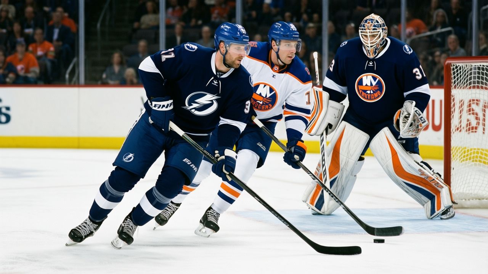
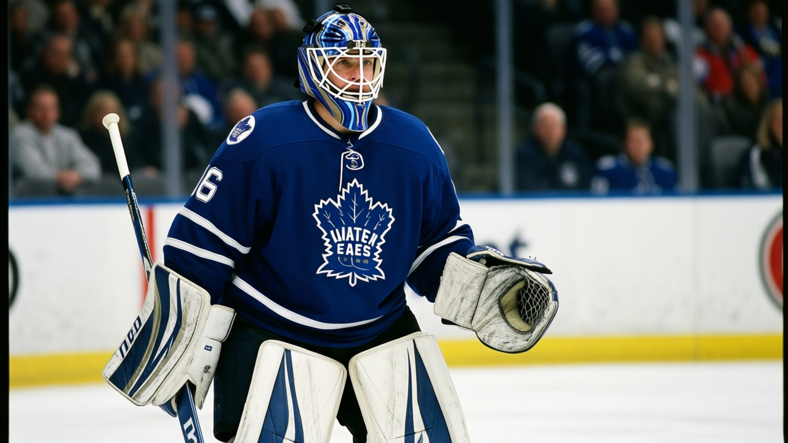

The Lightning have won eight straight and pulled 4 clear of Carolina, and the man doing it is 24 with a pace of 164
The January 5 write-up described 53 points and a team nobody watched. They have added 6 points, 3 wins, and a goaltender the Bureau now regrades at 90.
 Howard BlaineSenior writer, The Blaine Rankings · The Hockey Gazette
Howard BlaineSenior writer, The Blaine Rankings · The Hockey Gazette
 Tampa Bay Lightning have won 8 straight. They sit at 24-11-3, 59 points, and the gap between them and
Tampa Bay Lightning have won 8 straight. They sit at 24-11-3, 59 points, and the gap between them and  Carolina Hurricanes in the
Carolina Hurricanes in the  SE division is 4 points with a game in hand. On January 5, this desk filed them at 53 points, tied with Carolina at the top of the division, with no player graded above 86 and a question about whether anyone was watching. Someone was not watching closely enough.
SE division is 4 points with a game in hand. On January 5, this desk filed them at 53 points, tied with Carolina at the top of the division, with no player graded above 86 and a question about whether anyone was watching. Someone was not watching closely enough.
 Vincent Lecavalier84 has 36 goals and 48 assists for 84 points in 42 games. The Bureau prints his pace at 164, which is 4th in the league, behind only
Vincent Lecavalier84 has 36 goals and 48 assists for 84 points in 42 games. The Bureau prints his pace at 164, which is 4th in the league, behind only  Jaromir Jagr89,
Jaromir Jagr89,  Markus Naslund89 and
Markus Naslund89 and  Bill Guerin89. He is 24 years old. His overall grade sits at 88, the highest number on this roster. He was the first overall pick of the 1998 draft and he is scoring like it in his sixth full season.
Bill Guerin89. He is 24 years old. His overall grade sits at 88, the highest number on this roster. He was the first overall pick of the 1998 draft and he is scoring like it in his sixth full season.
The goaltender the desk could not find last week has a grade of 90 on the Bureau's Book.  Nikolai Khabibulin86 is 23-12 with a 3.11 goals-against average and a save percentage of .859 in 37 games. That is the 4th-best GAA in the league. It is not the 97 at
Nikolai Khabibulin86 is 23-12 with a 3.11 goals-against average and a save percentage of .859 in 37 games. That is the 4th-best GAA in the league. It is not the 97 at  Jean-Sebastien Giguere97 in Anaheim, but it is 90, and 90 wins you the Vezina conversation if the win total follows. He has 23 wins already with roughly 40 games left.
Jean-Sebastien Giguere97 in Anaheim, but it is 90, and 90 wins you the Vezina conversation if the win total follows. He has 23 wins already with roughly 40 games left.
The payroll is $45.79M. The cost per point is $0.78M, the 3rd-cheapest number in the league behind  Edmonton Oilers and
Edmonton Oilers and  Vancouver Canucks. They made $26.94M in profit last season. They draw 16039 a night at $79. The revenue is $57.91M. Detroit's payroll is $80.89M for 50 points. Tampa Bay's is $45.79M for 59. They sit one point behind
Vancouver Canucks. They made $26.94M in profit last season. They draw 16039 a night at $79. The revenue is $57.91M. Detroit's payroll is $80.89M for 50 points. Tampa Bay's is $45.79M for 59. They sit one point behind  Dallas Stars in the overall standings, ahead of every Canadian club.
Dallas Stars in the overall standings, ahead of every Canadian club.
The road is where the separation happened
The home record reads 14-6. That is good but not remarkable. The road record is 14-8, which means they have won 14 games away from the St. Pete Times Forum in 22 starts. Carolina is 8-13 on the road. Washington is 15-9 away but carries 5 overtime losses that cost them in the standings.
 Martin St. Louis81, 33, undrafted, has 29 goals and 42 assists for 71 points. His pace is 139, his grade is 85. He is the 2nd-best player on this team and nobody in this league drafted him.
Martin St. Louis81, 33, undrafted, has 29 goals and 42 assists for 71 points. His pace is 139, his grade is 85. He is the 2nd-best player on this team and nobody in this league drafted him.  Cory Stillman78, 31, has 20 goals and 48 assists for 68 points. They do not need a 3rd man, which is what the January 5 piece could not figure out then. They needed Lecavalier to be healthy and Khabibulin to hold the crease, and both have held.
Cory Stillman78, 31, has 20 goals and 48 assists for 68 points. They do not need a 3rd man, which is what the January 5 piece could not figure out then. They needed Lecavalier to be healthy and Khabibulin to hold the crease, and both have held.
The win streak read from the sheet
Their last 10, newest first: eight wins on top, two losses underneath. The streak says they have not lost since the first week of January. Goals-for over that stretch reads 43 against 33, a +10 differential. Carolina's last 10 read 32 against 34, which is a team bleeding goals. The Hurricanes are now 16-11-9 with 9 overtime losses in 43 games. Every OT loss is a point they keep but a win they do not add, and it is why they are 4 back despite only 2 more regulation losses than Tampa Bay.
Tampa Bay Lightning's remaining schedule through the week ahead includes  Ottawa Senators on January 14,
Ottawa Senators on January 14,  Philadelphia Flyers on January 18, and two more before the break. Ottawa is 15-20-4, 40 points, on a 6-game losing streak. Philadelphia is 13-20-4, 38 points. Neither is the reason this streak started. They are the reason it might continue. The question for February is whether Lecavalier's 164-point pace holds against the 90-graded goaltenders in the top tier, because the ones he has beaten so far are at 85 and below.
Philadelphia Flyers on January 18, and two more before the break. Ottawa is 15-20-4, 40 points, on a 6-game losing streak. Philadelphia is 13-20-4, 38 points. Neither is the reason this streak started. They are the reason it might continue. The question for February is whether Lecavalier's 164-point pace holds against the 90-graded goaltenders in the top tier, because the ones he has beaten so far are at 85 and below.

The desk logged a prediction on January 5 that Tampa Bay would finish in the top 4 in the Southeast. They are first now. The prediction does not move. The question the rest of the January tells us is whether 8 straight is a hot streak or the beginning of the team the rest of the conference has to plan around in April. At $0.78M per point, with a 24-year-old center on a pace of 164 and a goaltender the Book puts at 90, the planning is someone else's problem.